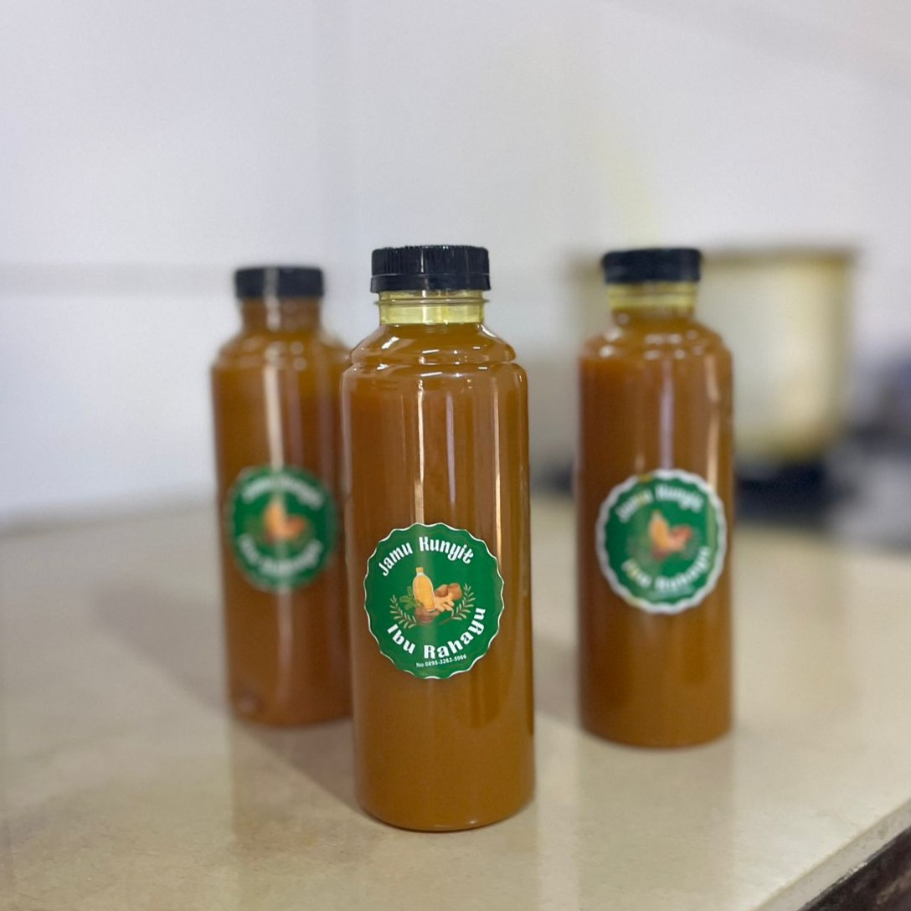

Manfaat Jamu Kunyit
- Membantu menjaga stamina dan kebugaran tubuh
- Mendukung kesehatan pencernaan
- Membantu meredakan perut kembung dan rasa tidak nyaman ringan
- Mengandung antioksidan alami untuk daya tahan tubuh
- Mendukung kesehatan hati dan metabolisme tubuh
- Dikenal membantu mengurangi peradangan ringan pada tubuh
*Manfaat bersifat tradisional dan hasil dapat berbeda pada setiap orang.
Pesan Produk Ini